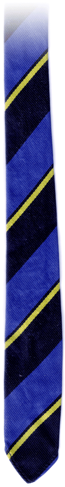
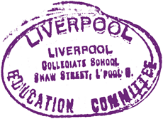

| Moments of Madness by Robert Edwards |
|
We stood side by side, all 30 eleven year old boys of the Liverpool Collegiate Form 3A and formed the three sides of a rectangle so that we all had a vantage point to see both the black board and the physics experiment which had been set up before us. Concentration on the proceedings was steadily waning, as we shifted our weight from one foot to the other and back again, for we were tired and restless. It was only our physics classes that were arranged in a double period, stretching the forty five minutes to an interminable ninety and only then twice a week.
The school board had clearly planned events so that the lessons requiring experiments were provided with adequate time for the experimental theory to be developed and the message was, hypothetically at least, driven home with the practical demonstration of the principles which had been enunciated. The theory had much to recommend it. In practice, the theory ignored the special traits of our physics teacher, Miss Hill, who insisted that her young charges spend the whole double lesson vertical, not so much in the belief that it encouraged concentration but rather that little boys were less inclined to let their small hands stray into mischief when standing with no intervening obstacles, such as desks, to obscure the evidence. By now, well into the second half of the lesson, small legs were cramping, feet were starting to develop pins and needles and the lesson was becoming a feat of endurance, as we feared that it would. Miss Hill was a legend. At around four feet ten inches in height, Miss Hill was only a little taller than most of her charges and there was not an ounce of fat on this small frame beneath the customary tweed skirt and severely cut blouse. There was little enough in the appearance to inspire fear but many a pair of knees quaked, when the touch paper was ignited and the subsequent explosion of invective was aimed in their direction. This Scottish whirlwind regularly scattered the boys crossing the street to catch their buses and tram cars after school, sending them scurrying for cover as she pressed her foot on the accelerator pedal of her Jowett Javelin and roared off along the tram-lined, cobble-stoned Shaw Street in a cloud of dust. Paranoia was rampant amongst my confreres and many were convinced that such periodic demonstrations of her prowess behind the wheel were merely a continuation of the intimidation of her pupils that were demonstrated every day of the week in classes. To attend her classes was to strive mightily in order to avoid the slightest provocation which might incur the wrath of our warden and invite detentions and the summonses to write punishment lines, usually 50 or 100, of suitable self correction, such as "I must not yawn in class", or "I must not spill ink on my notebook". The number of pupils led by the ear to the Vice-Principal's office to await a caning were too numerous to count. We were not hoodwinked by the alligator smiles that she wore for Parents' Night, or for her colleagues, for we had all too frequently witnessed that explosive temper in full expression and felt the power of its will. The subject on the agenda on this afternoon session was based on the principle of moments, that is the leverage effect of force times distance and Miss Hill was set up to demonstrate the experiment which we were intended to carry out during our next lesson. This consisted of balancing a graduated metre rule, pivoted at the centre on a pin through a small hole at the half-metre mark. At various distances we suspended small pans on chains which were designed to hold small brass weights which could be added to the pans with a pair of tweezers. Miss Hill completed her blackboard illustration of the principles of moments, showing that moments (product of force and distance) are equal on either side of the neutral (pivot) point when it is in balance. So, by increasing the weights and reducing the distance to the pivot point, the moment could be kept constant and the pivoted metre rule remained in balance in a horizontal position. She turned to Class 3A and barked out the instructions that must be followed, to be forgotten or misapplied at our peril. "You must handle these weights very carefully, using only the tweezers provided. If you pick them up with your hands, you will deposit moisture on them that will deteriorate them and will destroy their accuracy, don't let me catch any of you doing that." Standing erect, eyes focused directly ahead, there was not a single boy who wanted to be caught in that little escapade. We were totally silent, hoping that Miss Hill would not make eye contact, for this could be the prelude to an invitation to step forward and demonstrate our experimental skills to the rest of the class. Miss Hill swept her dark-rimmed eyes round the thin line surrounding her on three sides, shaking the loose hair on the top of her head forward onto her brow, scouring each face for some sign, of what, we had not a clue. The stare was one of naked intimidation. The pause was for effect, to let the words sink in, so that we could be well aware of our fate if our shortcomings were exposed. Miss Hill continued as she demonstrated how to move the suspension bar of the weight pans backwards and forwards to attain a balance. "I don't want you to poosh or pooll the suspension bar over the metre rule," she warned us, her thick Scottish accent punctuating each word and phrase, "Lift and place the pan into place, and whatever you do, DON'T DROP THE WEIGHTS ON THE FLOOR!" We could only imagine what fearful fate would await the miscreant if such a dire event were to occur. We each resolved never, never, never, to drop a single weight. "If you drop these weights, they will lose some mass, and then their accuracy is lost. AND THEN OUR EXPERIMENT WOULD BE MEANINGLESS, WOULDN'T IT, IF WE COULDN'T RELY ON THEIR ACCURACY." The pitch of her voice rose, along with its volume as she completed her sentences. She paused for a few more seconds, staring at the boy's faces, each for a moment, in turn. "Now I will show you what I mean." She then pivoted on the balls of her feet and stepped forward smartly to stand in front of the apparatus. The metre rule was clamped with a lever mounted on a board behind, to prevent capsizing the rule while it was being loaded. Miss Hill rooted around in the weight box with her tweezers and pulled out a couple of brass weights of medium size and placed them carefully in the left hand pan. Then she placed the right hand pan in its position of suspension and added a few weights to it, using her judgement and mental arithmetic, to gauge the first pass at achieving equilibrium. As she lifted the lever of the metre rule clamp, the rule started to dip on the left hand side and she quickly righted it with one hand, then reapplied the clamp with the other as the rule was in the horizontal position one again. Then Miss Hill picked up her tweezers and added a few weights to the right hand pan. Once again she released the clamp and this time the rule tilted to the right hand side. Righting the rule once more in the horizontal position, the clamp was again applied. This time Miss Hill opted to make a minor adjustment to the spacing of the right hand pan from the centre pivot of the metre rule, moving it slightly closer. Sensing victory this time, Miss Hill released the lever and the rule started to tilt slowly to the left again and once again the rule was clamped and the process repeated. The attention span of 11 year old boys is notoriously short and this business of balancing the moments started to take on the appearance of a real chore. We flashed exasperated looks at each other behind Miss Hill's back. At each unsuccessful attempt to achieve a perfect balance of the moment on each side of the rule, the more restless we boys became and the more we dared to stretch our legs out to relieve the stiffness and shifted our balance from one foot to the other. Some of us even started to yawn, accompanied by the sigh of air expressed from young lungs. The background accompaniment to the experiment started to increase little by little in volume. One boy, coughed and looked immediately discomfited, but a few moments later, a second cough was heard, and the whispering of small voices started up. The act of balancing and rebalancing weights continued and the movements of Miss Hill started to become quicker in her impatience with this school apparatus due to its failure to conform to her will. The adding and subtracting of weights, and the moving of the bar suspension of the weight pans, became more feverish, until, horror of horrors, one of the pans tilted under its applied weights and tipped them onto the floor with a gentle thud and a dull tinkle. There was, instantaneously, total silence. Every boy was rooted to the spot, mouth open, as the consequences of this failed experiment slowly dawned upon us. Miss Hill had dropped the weights herself! The very thing that she had warned us not to do! One by one, boyish heads turned to each other, as we assessed each others' expressions for their reactions and gradually the corners of our mouths started to turn upward, despite ourselves. Suppressed smiles became muted giggles and turned slowly to sniggers as we sought to stifle them with our hands. In a second, those smiles and giggles vanished as Miss Hill moved. Going down on one knee, she picked up a handful of weights. With her bare hands, not the tweezers, we noticed. Standing up and pivoting in one movement, Miss Hill swung her arm with all her force and the handful of weights bounced off a cupboard door in the far corner of the laboratory, causing the glass beakers on a nearby shelf to rattle and the loud thud of brass weights impacting hollow wood reverberated around the laboratory. Rigid with fear, 30 boys stood to ramrod attention and collectively gulped as Miss Hill briskly stepped forward, parted the line of boys with her hands and marched out the door of the laboratory without shutting the door. Feeling a strange brew of relief and apprehension which caused our little hearts to pitter-patter, we stood in our positions without moving a muscle and we stayed that way for several minutes. None of us wished to stay but none dared to move and possibly face the wrath of the tyrant in its most extreme and agitated state. Mercifully the bell sounded to signify the end of the teaching period and we filed out, slowly regaining our collective breath. Looking sheepishly at each other in embarrassed and confused silence we made our way out into the playground to unwind and recount our latest experience to incredulous friends from other classes. |
|
|  | |
|  | |